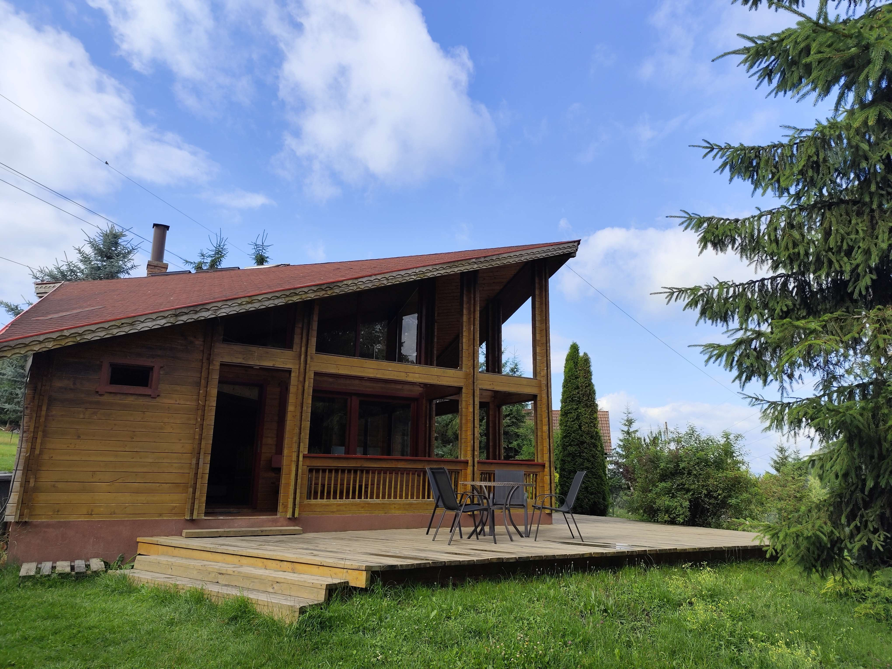
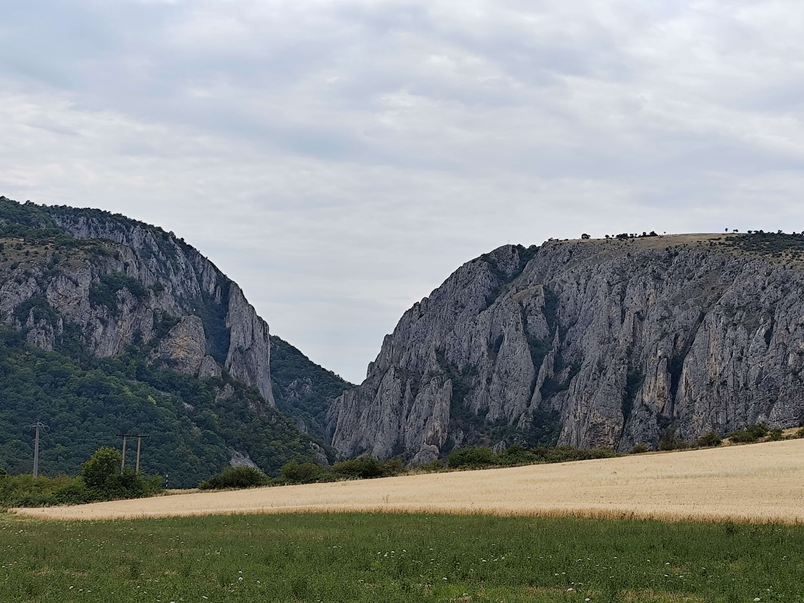
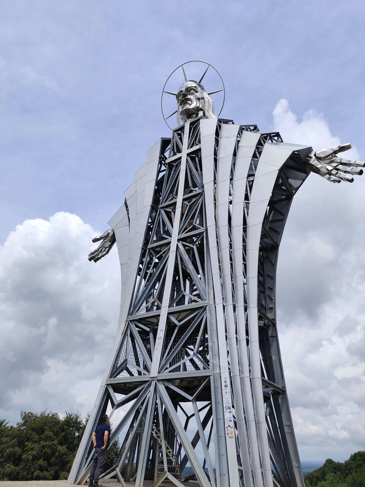
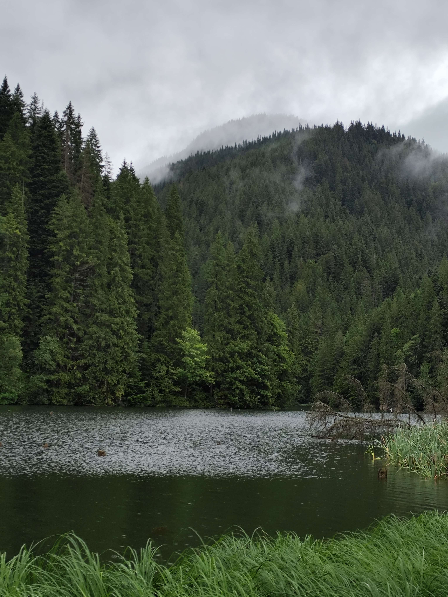
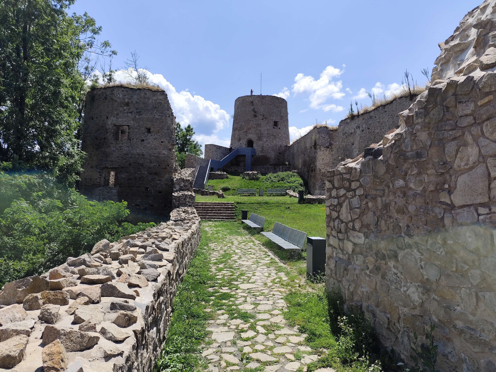
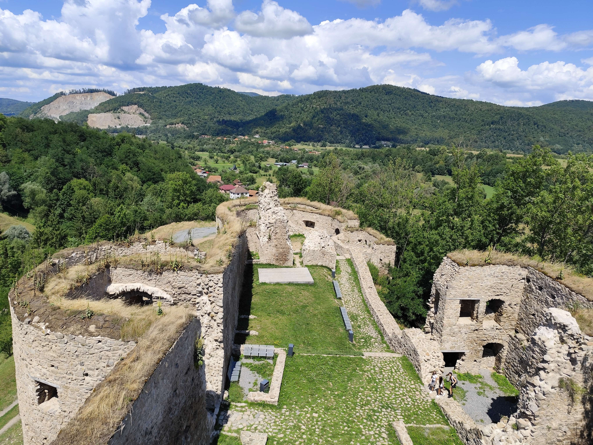

Tavaly nyáron a családommal elutaztunk Erdélybe nyaralni. Nagyon izgalmas utazás volt, mert sok új helyet láttunk, és közben rengeteg élményt szereztünk. Megnéztünk híres városokat, várokat, hegyeket és természeti látványosságokat is.
Az utazás alatt nagyon tetszett a gyönyörű táj és a nyugodt hangulat. Ezen a weboldalon szeretném bemutatni a kirándulás legérdekesebb pillanatait és azt, hogy miért maradt számomra emlékezetes ez a nyaralás.
Az utazás során rengeteg gyönyörű helyet látogattunk meg a családommal. Bejártuk Erdély híres városait, láttunk történelmi várakat és csodálatos hegyvidéki tájakat is. Minden nap tartogatott valami újat és érdekeset számunkra.
Az említeni való helyek közé tartozik Kolozsvár, Medve-tó, Gyilkos-tó, békás szoros, a sebesvári kastély és tordán a tordai hasadék. Ezekről készítettem képeket, amiket lentebb lehet megtekinteni.

A három szállásunk közül ez volt az utolsó. Ez a faház Gyergyóban volt a vékső szállásunk a kirándulásunk utolsó két napjára.

Ezen a képen látható az Európa szerte híres tordai hasadék. Minden erdélyi túrista bakancslistájának első helyezettje.

Ez a dombok és hegyek között eldugott különös kilátó egy kellemes meglepepetés volt számunkra. A jézus szíve kilátó onnan kapta a nevét, hogy konkrétan jézus szívéből van lehet lelátni a környező falvakra.

Ezen a képen egy szintén híres erdélyi hely látható, a Gyilkos-tó.

Ezen a képen Sebesvár vára látható. Rögtön a bejárat után készült ez a kép és a vár 90%-a látható.

Ez a kép a Sebesvári vár legnagyobb tornyából készült, ahonnan az egész várat belátni. Ezt a romos várat már csak rendezvény tartásokra szokták használni.